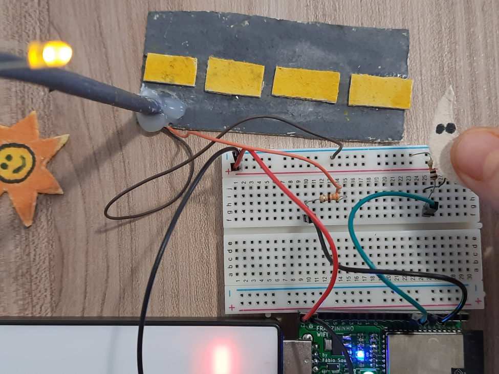
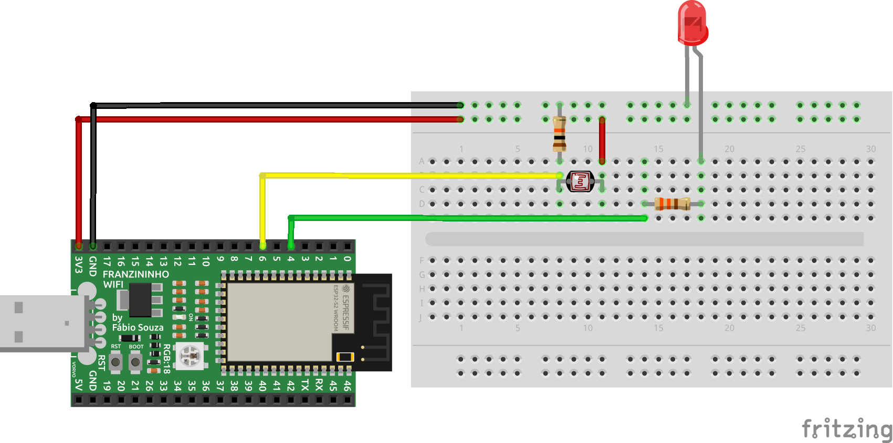
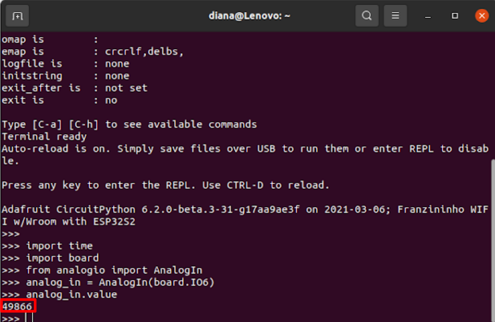
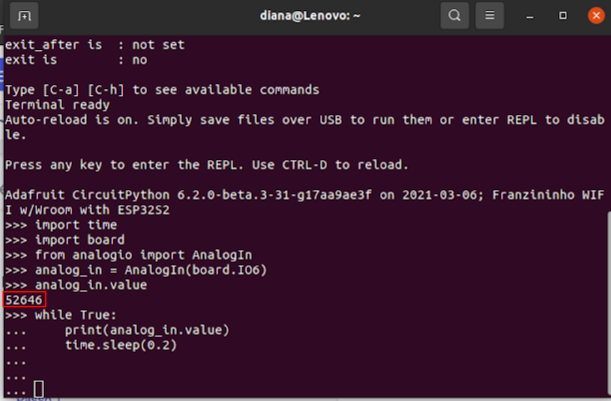
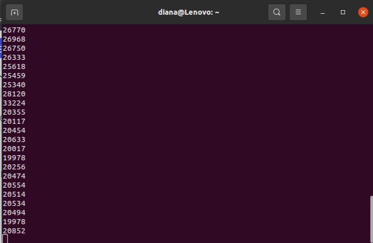

Sensor de luz com LDR

Proposta da atividade
Nesta atividade iremos utilizar o LDR como funcionamento de uma fotocélula, onde ao escurecer será aceso o LED, como acontece na luz da rua.
Materiais
- 1 Placa Franzininho Wifi;
- 1 Protoboard;
- 1 Resistor 330;
- 1 Resistor 10K;
- 1 LDR(10K)
- Jumpers
Circuito

Antes de sair escrevendo código, vamos testar via via linha de comando.
Terminal
Abra o terminal e digite picocom /dev/ ttyACMO e dê o enter se não funcionar digite ctrl C
Digite o comando abaixo, um por vez.
import time
import board
from analogio import AnalogIn
Agora configure o pino que você montou no seu circuito, no meu caso usei o pino 6, vamos criar a variável para ele.
ldr = AnalogIn(board.IO6)
Agora vamos ver o valor:
ldr.value
Veja o resultado, meu caso o valor está dando este valor 49866, mas lembrando que depende muito da luz que você está recebendo no momento que estiver realizando este exemplo.

Agora vamos criar um while para saber a variação

Você percebe que o valor no meu caso está variando entre 4000 e 5000, quando eu escureço o sensor LDR ele varia para 2000, conforme a imagem abaixo:

Pronto!
Agora vamos testar inserindo um LED e programando ele via o editor MU.
Código
""""Lição 4 -Sensor de luz com LDR"""
import time
import board
from analogio import AnalogIn
from digitalio import DigitalInOut, Direction
# Configurando o pino do LED, configurei foi o pino 4 = IO4
led = DigitalInOut(board.IO4)
led.direction = Direction.OUTPUT
# Configurando o pino LDR configurei o pino 6 = IO6
analog_in = AnalogIn(board.IO6)
while True:
media = 0;
for x in range(50):
media += analog_in.value
media/=50
print(media)
if (analog_in.value <15000) :
led.value = True
else:
led.value = False
time.sleep(0.2)
Vídeo
Desafio
Agora o desafio é fazer isso ao contrário. Quando colocar a mão no sensor LDR ao invés do LED acender, o LED irá apagar.
Dica
Utilize a #franzininho para que nós possamos publicar em nossas redes sociais o seu desafio